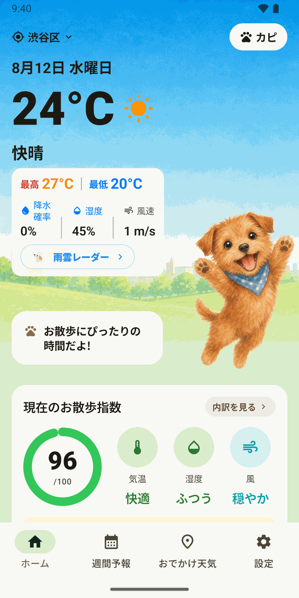
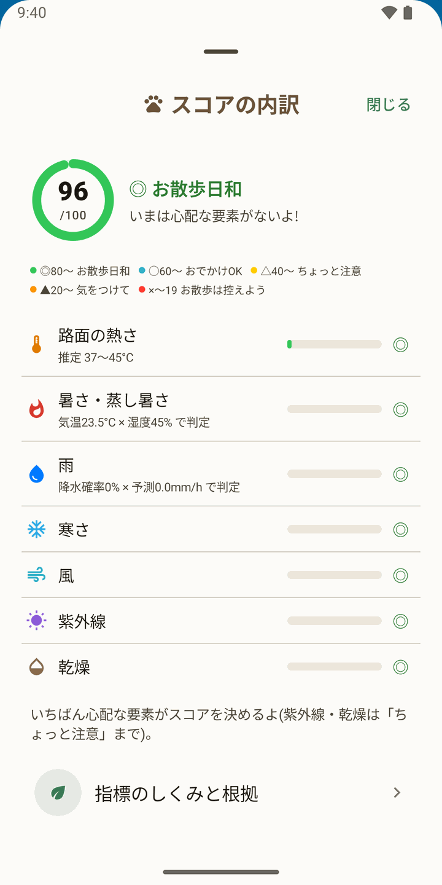
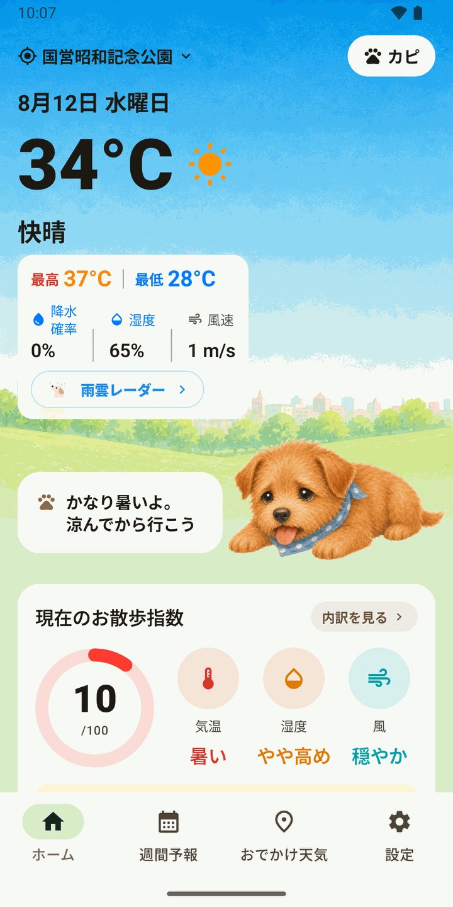
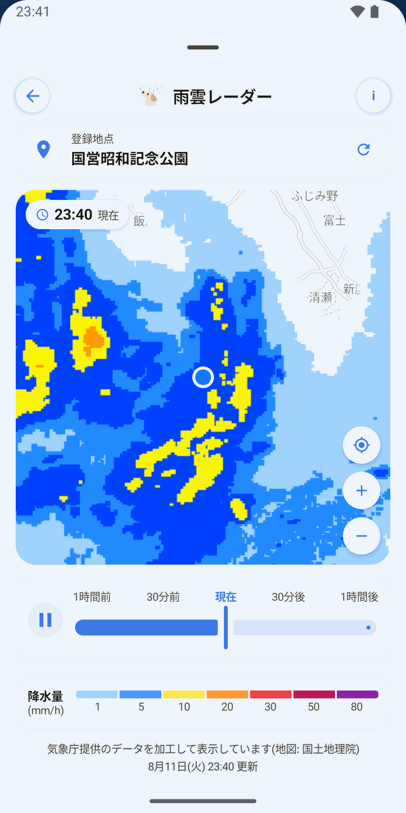
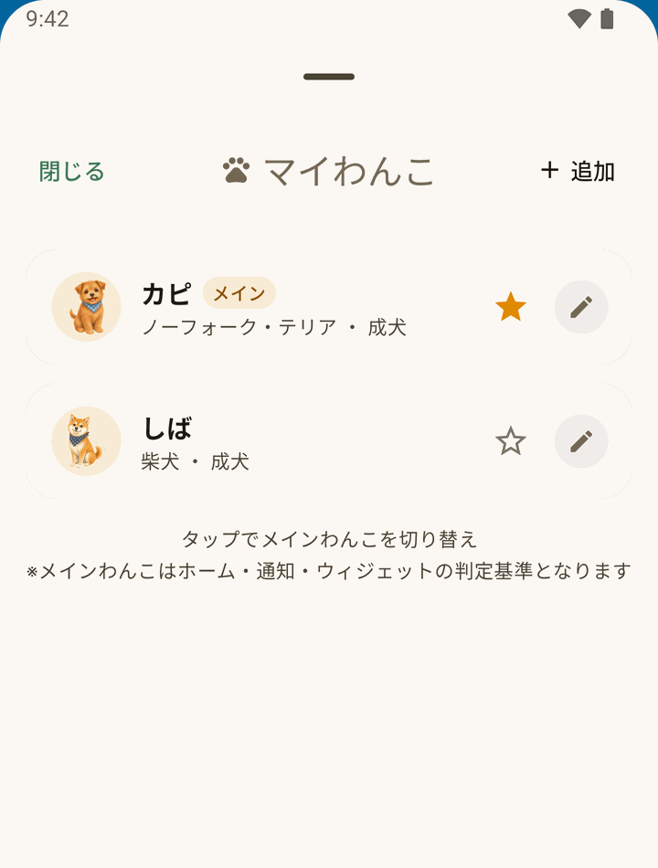
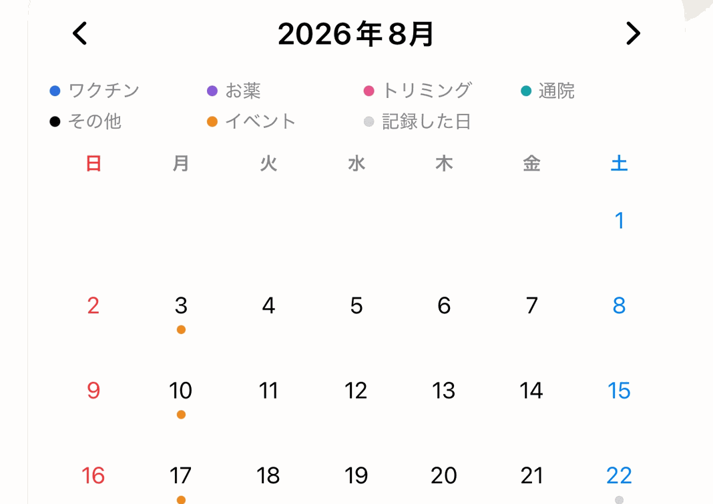
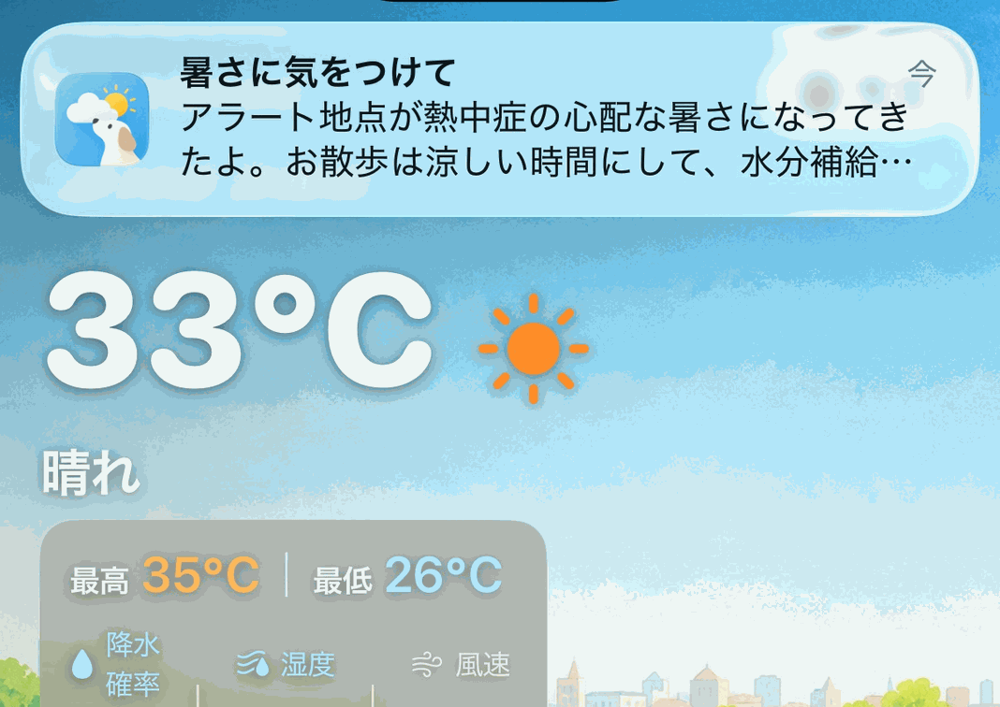
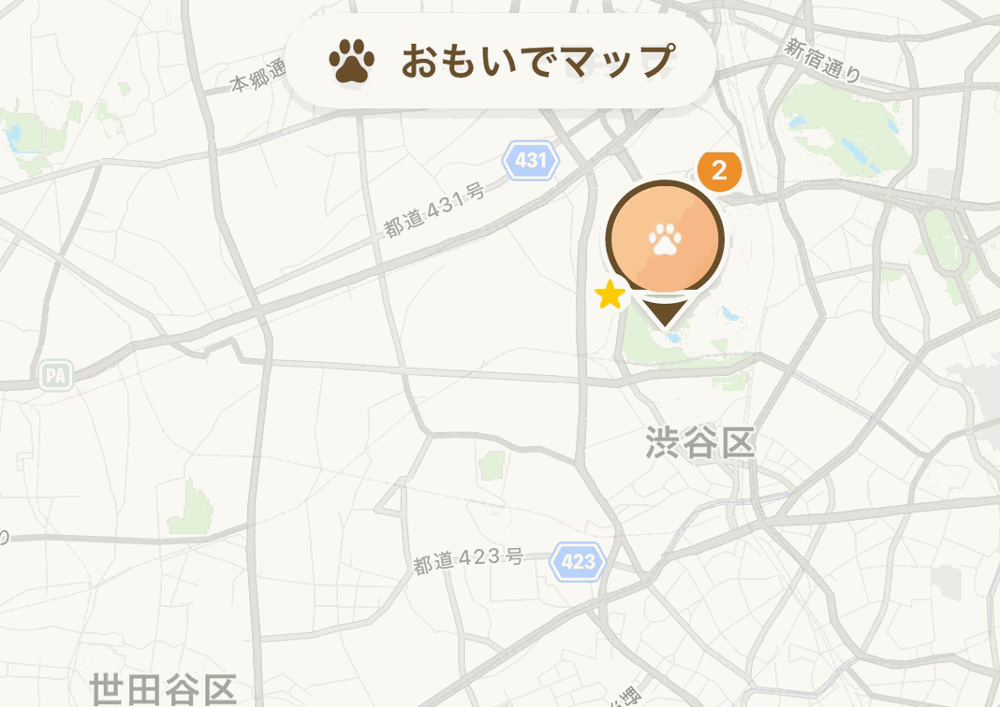
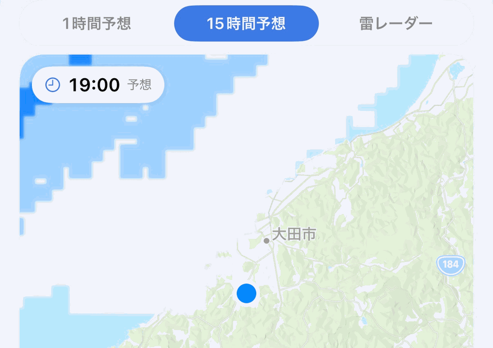

今日のお散歩、いつ出かけよう?
気温だけじゃわからない、わんこ目線の天気予報。
おさんぽびより
基本の機能は無料・広告なし
人には気持ちいい陽気でも、その足元は熱いかもしれない。
天気予報の数字
歩くときの熱さ
おさんぽびよりは、気温のうしろに隠れているものまで見にいきます。路面の熱さ、湿度、風、紫外線。それらをまとめて「今、出て大丈夫?」のひと言に変えて、毎朝お届けします。
今日のお散歩指数
気温・湿度・雨・風・路面温度から、今日の散歩しやすさを0〜100でお答えします。1時間ごとの指数と「おすすめのお散歩時間」つき。朝いちばんに開けば、今日の予定が決まります。

なぜその点数なのか、全部見せます
暑さ・路面・雨・寒さ・風・紫外線・乾燥の7つの要素に分けて、点数の内訳をいつでも確認できます。判断の根拠と出典もアプリの中に載せているので、鵜呑みにせず自分で確かめられます。

路面の熱さと、熱中症のリスク
太陽の高さや雲・雨のようすからアスファルトの熱さを推定し、肉球のやけどが心配な時間帯をお知らせします。熱中症は環境省の暑さ指数(WBGT)の区分に沿って判定。短頭種・子犬・シニアの子は、より慎重に見ます。

雨雲レーダー
気象庁の高解像度降水ナウキャストで、雨雲の動きを地図で確認できます。「今から出て、降られないか」をおでかけ前にさっとチェック。

うちの子に合わせて
犬種・年齢・体型を登録すると、判定がその子に合わせて変わります。110種以上の犬種に対応。多頭飼いのおうちは、何頭でも登録できます。

同じ天気でも、この子たちの答えは違う。
短いマズルの子は熱がうまく逃がせません。地面に近い小型犬は、路面の照り返しをまともに受けます。厚いダブルコートの子と、寒さに弱い短毛の子でも、快適な一日は違います。おさんぽびよりは、その差をちゃんと計算に入れます。
おさんぽびよりプレミアム
基本の機能は無料のまま。もう少し手を貸してほしい方へ、次の5つが加わります。
-
カレンダー

うちの子の予定を、思いどおりにカレンダーへ
トリミング・通院・フィラリア予防など、うちの子に必要な予定を自由に追加できます。仕上がりや体重は、写真とメモで記録に。無料でもワクチン・ノミダニ予防の予定は使えます。
-
リアルタイムアラート

急な暑さ・雨・雷を、リアルタイムでお知らせ
アプリを閉じていても、観測データの変化を見てお知らせします。無料の通知は予報から前の晩に作るので、急な変わり方には追いつけません。
-
おもいでマップ

お散歩の思い出を、写真つきで地図に残せる
行った場所に、写真とひとことを。ピンが増えるほど、わんことの思い出が地図になっていきます。無料でも3件まで試せます。
-
レーダー強化

雨の予想は15時間先まで。雷レーダーも
無料の雨雲レーダーは1時間先まで。「夕方なら降られない」が前の晩にわかります。雷レーダーは、いま雷が鳴っている場所を映します。
-
日替わり背景
写真10枚といろんなわんこが、日替わりでホームに
無料は写真1枚を固定で表示します。今日はどの子かな、が毎朝のたのしみに。
月額350円(税込)現在はiOS版のみのご提供です
リアルタイムアラートと雨の予想・雷レーダーは、日本国内の地点のみに対応しています。日替わりで登場するのは、イラストをご用意できている犬種です。お支払い・解約の条件は特定商取引法に基づく表記をご覧ください。
安心してお使いいただけます
- 広告は表示しません
- 基本の機能は無料。追加機能は任意の有料プランです
- アカウント登録は不要です
- わんこの情報も登録地点も、端末の中だけに保存されます(リアルタイムアラートの利用時を除く。詳しくはプライバシーポリシー)
- 位置情報は天気の取得だけに使います
- 位置情報を許可しなくても、地点を登録すればすべての機能が使えます
- それぞれの指標の根拠と出典を、アプリの中で公開しています
よくある質問
位置情報を許可しなくても使えますか?
はい。ホーム画面の地点メニューから地点を登録すれば、すべての機能をご利用いただけます。
表示される路面温度は実測値ですか?
いいえ。太陽の高さと雲量から推定した目安です。お出かけ前に、地面に5秒手を当てて確かめる「5秒チェック」を併用してください。
散歩指数や熱中症リスクの根拠は?
アプリ内の「設定 > 指標のしくみと根拠」に、閾値と出典(環境省の暑さ指数指針・獣医師監修の公開資料など)を掲載しています。
無料のままでも使えますか?
はい。お散歩指数・熱中症や路面温度の判定・雨雲レーダー(1時間先まで)・週間予報など、基本の機能は無料でお使いいただけます。iOS版のカレンダーも、ワクチンやノミダニ予防などの予定は無料でお使いいただけます。おさんぽびよりプレミアムは、そこに機能を足す任意のプランです。
おさんぽびよりプレミアムは、Android版でも使えますか?
いまのところiOS版のみのご提供です。Android版への導入は準備を進めています。なお基本の機能は、iOS版・Android版のどちらも無料でお使いいただけます。
今日のお散歩、いつ出かけましょうか。
まずはアプリを開いて、今日のお散歩指数をのぞいてみてください。